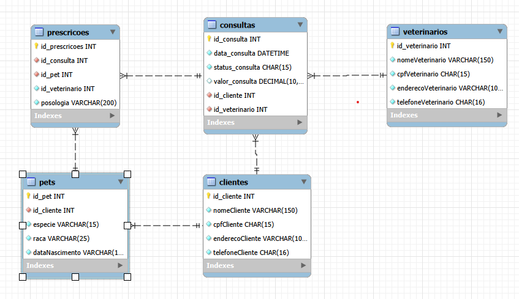

Atividade IV - Banco de Dados PetVida
1. Contextualização e Problemas
A clínica PetVida usava papel e planilhas, o que gerava:
- Dados repetidos de clientes e pets
- Falta de atualização de telefones e endereços
- Perda de histórico de consultas
2. Proposta de Melhoria
Criação de um banco de dados MySQL para organizar as tabelas e garantir que nenhum dado fique perdido.

3. Formas Normais
- 1FN: Dados organizados e sem listas na mesma célula.
- 2FN: Tabelas com Chave Primária (ID).
- 3FN: Colunas dependem apenas da chave principal.
- 4FN: Separação de relacionamentos independentes.
4. Tabelas Criadas
As tabelas do projeto são: clientes, pets, veterinarios, consultas, prescricoes e veterinarios.